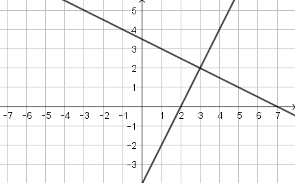
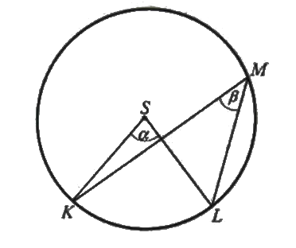
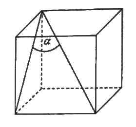
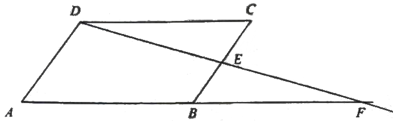
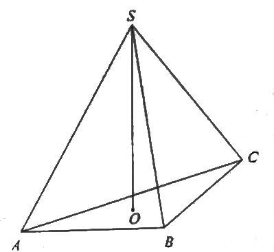

Matura 2018 sierpień
Cena pewnego towaru w wyniku obniżki o \(10\%\) zmniejszytła się o \(2018\) zł. Ten
towar po tej obniżce kosztował
A.\( 20180 \) zł
B.\( 18162 \) zł
C.\( 2108 \) zł
D.\( 2028 \) zł
B
Liczba \(\sqrt{\sqrt[3]{2}}\) jest równa
A.\( 2^{\frac{1}{6}} \)
B.\( 2^{\frac{1}{5}} \)
C.\( 2^{\frac{1}{3}} \)
D.\( 2^{\frac{2}{3}} \)
Dane są liczby \(x=4{,}5\cdot 10^{-8}\) oraz \(y=1{,}5\cdot 10^{2}\). Wtedy iloraz
\(\frac{x}{y}\) jest równy
A.\( 3\cdot 10^{-10} \)
B.\( 3\cdot 10^{-6} \)
C.\( 6{,}75\cdot 10^{-10} \)
D.\( 6{,}75\cdot 10^{-4} \)
Liczba \(\log_496-\log_46\) jest równa
A.\( \log_490 \)
B.\( \log_696 \)
C.\( 4 \)
D.\( 2 \)
D
Równość \((a+2\sqrt{3})^2=13+4\sqrt{3}\) jest prawdziwa dla
A.\( a=\sqrt{13} \)
B.\( a=1 \)
C.\( a=0 \)
D.\( a=\sqrt{13}+1 \)
Na rysunku jest przedstawiona graficzna ilustracja układu dwóch równań stopnia
pierwszego z dwiema niewiadomymi \(x\) i \(y.\)  wskaż ten układ.
A.\( \begin{cases} y=-2x+8 \\ y=-\frac{3}{2}x+\frac{13}{2} \end{cases} \)
B.\( \begin{cases} y=2x-4 \\ y=-\frac{1}{2}x+\frac{7}{2} \end{cases} \)
C.\( \begin{cases} y=x-1 \\ y=\frac{1}{2}x+\frac{1}{2} \end{cases} \)
D.\( \begin{cases} y=3x-7 \\ y=-\frac{2}{3}x+4 \end{cases} \)
B
Rozwiązaniem równiania \(\frac{x-2}{3(x+2)}=\frac{1}{9}\) jest liczba
A.\( -2 \)
B.\( 2\)
C.\( 4\)
D.\( -4\)
C
Dane są funkcje \(f(x) = 3^x\) oraz \(g(x) = f(-x)\), określone dla wszystkich
liczb rzeczywistych \(x\). Punkt wspólny wykresów funkcji \(f\) i \(g\)
A.nie istnieje
B.ma współrzędne \((1, 0)\).
C.ma współrzędne \((0, 1)\).
D.ma współrzędne \((0, 0)\).
C
Punkt \( \bigl(1, \sqrt{3}\bigl)\) należy do wykresu funkcji \(y = 2\sqrt{3}x +
b\). Współczynnik \(b\) jest równy
A.\( 7 \)
B.\( 3\sqrt{3}\)
C.\( -5\)
D.\( -\sqrt{3} \)
D
Wykresem funkcji kwadratowej \(f(x) = x^2 - 2x - 11\) jest parabola, której
wierzchołkiem jest punkt o współrzędnych
A.\( (-2, -3) \)
B.\( (-2, -12) \)
C.\( (1, -8) \)
D.\( (1, -12) \)
D
Funkcja kwadratowa jest określona wzorem \(f(x) = -3(x-2)(x-9)\). Liczby \(x_1\),
\(x_2\) są różnymi miejscami zerowymi funkcji \(f\). Zatem
A.\( x_1 + x_2 = 11 \)
B.\( x_1 + x_2 = -11 \)
C.\( x_1 + x_2 = 33 \)
D.\( x_1 + x_2 = -33\)
A
Największą wartością funkcji \(y = -(x-2)^2 + 4\) w przedziale \(\langle 3,
5\rangle\) jest
A.\( 0 \)
B.\( 5 \)
C.\( 4 \)
D.\( 3 \)
D
Ciąg arytmetyczny \((a_n)\), określony dla \(n \ge 1\), spełnia warunek \(a_3 + a_4
+ a_5 = 15\). Wtedy
A.\( a_4 = 5 \)
B.\( a_4 = 6 \)
C.\( a_4 = 3 \)
D.\( a_4 = 4 \)
A
Dla pewnej liczby \(x\) ciąg \((x, x + 4, 16)\) jest geometryczny. Liczba \(x\)
jest równa
A.\( 8 \)
B.\( 4 \)
C.\( 2 \)
D.\( 0 \)
B
W trójkącie prostokątnym przeciwprostokątna ma długość \(3\), a długość
przyprostokątnej leżącej naprzeciwko kąta \(\alpha\) jest równa \(\sqrt{3}\). Zatem:
A.\( \alpha = 60^\circ \)
B.\( \alpha \in (40^\circ, 60^\circ) \)
C.\( \alpha \in (30^\circ, 40^\circ) \)
D.\( \alpha = 30^\circ \)
C
Kąt \(\alpha\) jest ostry i \(\cos \alpha = \frac{3}{5}\). Wtedy
A.\( \sin \alpha \cdot \operatorname{tg} \alpha = \frac{16}{15} \)
B.\( \sin \alpha \cdot \operatorname{tg} \alpha = \frac{15}{16} \)
C.\( \sin \alpha \cdot \operatorname{tg} \alpha = \frac{8}{15} \)
D.\( \sin \alpha \cdot \operatorname{tg} \alpha = \frac{6}{20} \)
A
Dany jest okrąg o środku \(S\). Punkty \(K\), \(L\), \(M\) leżą na tym okręgu. Na
łuku \(KL\) tego okręgu są oparte kąty \(KSL\) i \(KML\) (zobacz rysunek), których miary \(\alpha\)
i \(\beta\) spełniają warunek \(\alpha + \beta = 114^\circ\).  Wynika stąd, że
A.\( \beta = 19^\circ \)
B.\( \beta = 38^\circ \)
C.\( \beta = 57^\circ \)
D.\( \beta = 76^\circ \)
B
Różnica miar dwóch sąsiednich kątów wewnętrznych równoległoboku jest równa
\(80^\circ\). Kąt rozwarty tego równoległoboku ma miarę
A.\( 120^\circ \)
B.\( 125^\circ \)
C.\( 130^\circ \)
D.\( 135^\circ \)
C
Pole trójkąta o bokach długości \(4\) oraz \(9\) i kącie między nimi o mierze
\(60^\circ\) jest równe
A.\( 18 \)
B.\( 9 \)
C.\( 18\sqrt{3} \)
D.\( 9\sqrt{3} \)
D
Proste o równaniach \(y = (3m - 4)x + 2\) oraz \(y = (12 - m)x + 3m\) są
równoległe, gdy
A.\( m = 4 \)
B.\( m = 3 \)
C.\( m = -4 \)
D.\( m = -3 \)
A
Punkt \(A = (-3, 2)\) jest końcem odcinka \(AB\), a punkt \(M = (4, 1)\) jest
środkiem tego odcinka. Długość odcinka \(AB\) jest równa
A.\( 2\sqrt{5} \)
B.\( 4\sqrt{5} \)
C.\( 5\sqrt{2} \)
D.\( 10\sqrt{2} \)
D
Jeżeli \(\alpha\) oznacza miarę kąta między przekątną sześcianu a przekątną ściany
bocznej tego sześcianu (zobacz rysunek), to 
A.\( \sin \alpha = \frac{\sqrt{6}}{3} \)
B.\( \sin \alpha = \frac{\sqrt{2}}{2} \)
C.\( \sin \alpha = \frac{\sqrt{3}}{2} \)
D.\( \sin \alpha = \frac{\sqrt{3}}{3} \)
D
Przekrój osiowy walca jest kwadratem o przekątnej \(10\sqrt{2}\). Pole powierzchni
bocznej tego walca jest równe
A.\( 50\pi \)
B.\( 100\pi \)
C.\( 200\pi \)
D.\( 250\pi \)
B
Abiturient jednego z liceów zestawił w tabeli oceny ze swojego świadectwa
ukończenia szkoły.
| Ocena |
6 |
5 |
4 |
3 |
2 |
| Liczba ocen |
2 |
3 |
5 |
5 |
1 |
Mediana przedstawionego zestawu danych jest równa
A.\( 3 \)
B.\( 3{,}5 \)
C.\( 4 \)
D.\( 4{,}5 \)
C
W grupie liczącej \(29\) uczniów (dziewcząt i chłopców) jest 1\(\)5 chłopców. Z tej
grupy trzeba wylosować jedną osobę. Prawdopodobieństwo zdarzenia polegającego na tym, że zostanie
wylosowana dziewczyna, jest równe
A.\( \frac{14}{15} \)
B.\( \frac{1}{14} \)
C.\( \frac{14}{29} \)
D.\( \frac{15}{29} \)
C
Rozwiąż nierówność \(x^2 + 6x - 16 \lt 0\).
\(x \in (-8, 2)\)
Rozwiąż równanie \(\Bigl(x^3 + 27\Bigl)\Bigl(x^2 - 16\Bigl) = 0\).
\(x \in \{-4, -3, 4\}\)
W równoległoboku \(ABCD\) punkt \(E\) jest środkiem boku \(BC\). Z wierzchołka
\(D\) poprowadzono prostą przecinającą bok \(BC\) w punkcie \(E\). Proste \(AB\) i \(DE\) przecinają
się w punkcie \(F\) (zobacz rysunek). Wykaż, że punkt \(B\) jest środkiem odcinka \(AF\). 
Wykaż, że jeżeli \(a\) i \(b\) są liczbami rzeczywistymi dodatnimi, to \((a +
b)\biggl(\frac{1}{a} + \frac{1}{b}\biggl) \ge 4\).
Dziewiąty wyraz ciągu arytmetycznego \((a_n)\), określonego dla \(n \ge 1\), jest
równy \(34\), a suma jego ośmiu początkowych wyrazów jest równa \(110\). Oblicz pierwszy wyraz i
różnicę tego ciągu.
\(a_1 = -2\), \(r = 4\frac{1}{2}\)
Punkty \(A = (2, 4)\), \(B = (0, 0)\), \(C = (4, -2)\) są wierzchołkami trójkąta
\(ABC\). Punkt \(D\) jest środkiem boku \(AC\) tego trójkąta. Wyznacz równanie prostej \(BD\).
\(y = \frac{1}{3}x\)
W ostrosłupie prawidłowym trójkątnym \(ABCS\) krawędź podstawy ma długość \(a\).
Pole powierzchni bocznej tego ostrosłupa jest dwa razy większe od pola jego podstawy. Oblicz cosinus
kąta nachylenia krawędzi bocznej tego ostrosłupa do płaszczyzny jego podstawy. 
\(\cos \alpha = \frac{2\sqrt{7}}{7}\)
Ze zbioru \(A = \{-3, -2, -1, 1, 2, 3\}\) losujemy liczbę \(a\), natomiast ze
zbioru \(B = \{-1, 0, 1, 2\}\) losujemy liczbę \(b\). Te liczby są - odpowiednio - współczynnikiem
kierunkowym i wyrazem wolnym funkcji liniowej \(f(x) = ax + b\). Oblicz prawdopodobieństwo zdarzenia
polegającego na tym, że otrzymana funkcja \(f\) jest rosnąca i ma dodatnie miejsce zerowe.
\(P(A) = \frac{3}{24} = \frac{1}{8}\)
W trójkącie prostokątnym \(ACB\) przyprostokątna \(AC\) ma długość \(5\), a promień
okręgu wpisanego w ten trójkąt jest równy \(2\). Oblicz pole trójkąta \(ACB\).
\(P = 30\)